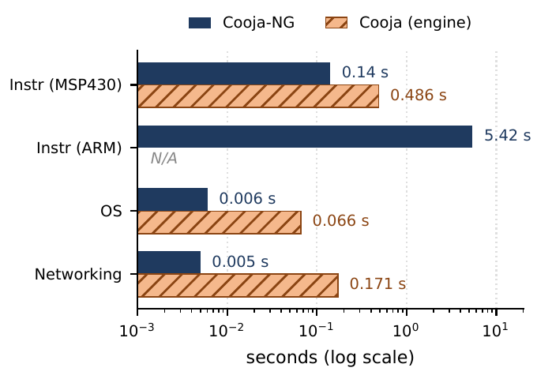

Released 2026-08-13 · first release with TrustZone-M, nRF54L15 and RISC-V · board tests agent-driven
0commits
0pull requests
0contributors
0required CI checks 17 groups × 2 OS
0 / 18real boards, checklist #3190
The agent as release engineer
The merge team set the rules, as every year: the plan, the runbook and the board checklist (#3190), copied from last release. No tag until every board row is green.
The agent worked inside them. Reading build.yml it noticed: "CI has never tested the release head." So the release PR became the CI gate.
The agent on the boards
Built, flashed and read back every checklist row on real boards: Firefly + CC1200, CC13x0/CC1352, nRF52840/nRF5340, nRF54L15, Gecko, Sky, FR5969.
The human's job: plug in the cable, press the button. Everything else was the agent.
Board-only findings went into the release notes: CC1200 RX starvation, two TSCH ports that don't work yet, a 1.8 V DK that "will burn you."
Simulation proves the logic; the board proves everything else. Hardware as oracle — and the agent now runs the oracle.
agentcodeemulator = proxysilicon = calibrator
2Cooja-NG: silicon and emulator correct each other
The Contiki-NG simulator reimplemented in C, kept honest by the boards it emulates
Silicon calibrates the emulator
nRF54L15 DK, DWT CYCCNT over SWD: one TrustZone transition (NS → SG → secure → BXNS) = 58 cycles.
Cooja-NG tz-boot on the same image: 389 SG + 390 BXNS.
The silicon number sets the emulator's cost model, not the other way round.
Hardware finds what emulation cannot
CC1200 sub-GHz: polling starved the RX IRQ on the SPI bus (#3140, #3206). Only visible with a logic analyzer.
Two negative results written down: TSCH on nRF54L15 and on Gecko. Writing is cheap now.
The emulator closes the CI loop
93 / 93 upstream tests pass. SIMULATOR=cooja-ng is a one-line switch; CI downloads a binary per tag.
~2400× real time: a 60 s scenario in < 0.1 s.

A four-year-old flake:21-cooja-rpl-tsch-security, gcc, 15 runs: clang passes "by luck of stack contents". Uninitialised TSCH enhanced-ACK params (#3205), hidden since a 2022 timeout bump. One memset. A deterministic simulator turns "flaky" into "14 of 15", and 14 of 15 is something an agent can work on.
Boots unmodified Contiki-NG; 640×480 HDMI text mode, a C64-style greeting.
Written and debugged with an agent; the human held the board and the datasheets.
The loop the agent could see
58 riscv-tests under Verilator: 56 pass, 2 expected failures — both absent CSRs.
Testbench writes PNG frames — a wrong character in the greeting is a diff the agent can read.
200 000 random vectors against a known-good TMDS encoder: a wrong control constant shows up in the first ten lines.
frame 000
The Verilator testbench's "virtual monitor": Contiki-NG booting on the core, one PNG per 60 Hz frame, replayed here. The agent can see the screen.
A failure you can explain is a specification; one you cannot is a bug.
agentcodeemulatorsilicon = oraclehuman: eyes on the board
The monitor stays black — the board fights back
TMDS encoder bit-exact in simulation. On the board: nothing.
In simulation
On the board
HDMI pads
PNG frames correct
Black. Missing IO_TYPE=LVDS25: the pads were single-ended. "Differential pads are a constraint, not code."
Timers
Ticks at 1 Hz
27× too fast: objects reused from the simulator's 1 MHz build. Fix: one build dir per clock.
Warm reset
printf works
printf silent: RAM keeps modified .data, newlib wakes up stale. Fix: save/restore .data; the simulator learned reset injection.
USB serial
Clean stream
The BL616 bridge wedges or replays buffered serial; rate measurements lie.
Custom HDMI TX
Bit-exact
Flickers. Root cause unproven. Shipped with hdl-util instead.
"Nearly every bug in this project was found in simulation" — and the ones that weren't are the ones on this slide. The PNG frames were right; the photons were wrong.
agentcodeemulatorsilicon = oracle + calibrator
4The Atech emulator: diff against silicon
esp32sim runs the board's real binary — mask ROM → bootloader → app — natively and in the browser
Loop
Method
Result
Decoder
Every instruction of three real binaries vs objdump
977 k / 161 k / 126 k instructions, 0 mismatches
ESP32-S3
JTAG lock-step: chip and emulator stepped on the same flash dump
8 000 + 3 000 steps, 0 PC divergences
ESP32-C3 / C6
Console diff against a real boot log
205 / 208 and 203 / 204 lines identical
What only silicon could tell us
Missing salt / s32nb / MAC16 instruction encodings.
SPI flash command one quantum late; cycle counter not restarting at reset.
Interrupt threshold at the wrong register — the handler re-entered 3 867 times.
The symptom was an illegal instruction in rtos_int_enter; the cause was 500 KB away.
The diff target is always something the model did not write: objdump, JTAG, a boot log.
Live: the same emulator core, compiled to WebAssembly, booting the board's real binary. Press D to reboot · ↓ two more scenarios.
Extra: two emulated ESP32-C6 motes running Contiki-NG on one 802.15.4 medium, in this tab. The second powers on 1.3 s later; both hear each other's broadcasts.
Extra: the same Atech firmware as a C64 SID jukebox: cRSID emulates a whole C64 inside the emulated ESP32-S3. Click "enable audio".
Two stories the green tests never told
Two wrongs made a right
The I2S model hard-coded 44.1 kHz; the SID player programs 22.05 kHz → double tempo…
…while the emulator ran at 0.5–0.8× real time. The errors cancelled. Every test stayed green until the pacing was exact.
It surfaced the day the JIT made real-time pacing exact. Bonus from the scope: the vendor's I2S driver actually runs at 44 101 Hz.
2× tempo × 0.5× speed ≈ sounds right
Making the emulator faster found a correctness bug. Every green test had passed with both errors in place.
Light one LED and look
The LED-grid map was "inferred from two photos." Wrong. Twice. VU bars "came out scattered across the module" while the emulator's page looked right.
grid-selftest: light one chain LED at a time on the real module. Column-serpentine, and the two slots hold it 90° apart.
port 7
port 11
chain LED 0 → its glass cell on each module, as measured. Same map now in firmware and emulator.
Two photos → wrong map, twice. One self-test → right, once.
The pattern
1Make the loop observable
Console diffs, PNG frames, instruction counts, WAV hashes, cycle counters. If the agent cannot see it, it cannot fix it.
2Make it deterministic
"Flaky" is not a work item. "14 of 15" is.
3Diff against silicon, not against yourself
objdump, JTAG lock-step, a real boot log, one LED at a time. The golden must come from outside the model.
4Pin goldens, then go faster
Speed is safe only when every output stays byte-identical — and going faster is how the cancelling bugs surface.
5Keep the receipts, including the rejections
JSON + hashes + repro for every claim; rejected candidates stay, with numbers. "alice": 120 commits, 25 PRs, 5 days, every one with receipts.
6A human holds the board and names the cause
The agent applies fixes; the human decides what "correct" means and what a green test is hiding.
Six rules — none of them about the model. All of them about what the model gets to observe.
Where the agents stopped
What we saw, again and again
"The agent could apply a fix once we named the cause, but it could not reliably name the cause itself."— Cooja-NG paper, SNCNW 2026
"…often proposed a local workaround ('enlarge the buffer', 'treat as non-fatal') when the correct fix was further up the call stack."— Cooja-NG paper, SNCNW 2026
What worked: a persistent bug ledger — human-named root causes, fed back into the agent's context on every run.
Three correct numbers, one question
6.15×JIT speedup, synthetic
3.42×on Zephyr
1.00×on the demo firmware: it is paced to wall time
All three came with receipts, and all three are right. The last one measures a loop that cannot go faster than the clock on the wall.
Which number the work was for is a question the agent never asked. That was the human's job.
What I actually learned this summer
1The bottleneck moved from writing to observing
Code is cheap now. The scarce work was building the instrument: the PNG per frame, the JTAG lock-step, the one-LED self-test. Whoever builds the eyes decides what gets fixed.
2Green by accident is the new default failure
The bugs that survive a competent agent are the ones that cancel each other out. They don't show up in tests — they show up when you go faster, or when you diff against silicon.
3Naming the cause is still human work
The agent applied fixes once we named the cause, and reached for local workarounds when we didn't. Verification is automatable. The bug ledger of human-named root causes was the most valuable file in every repo.
The one that scares meWhat was left for the human in the loop was a cable and a button. Those are the rows we will automate first — and then the same blind spots that give us green-by-accident tests will give us green-by-accident actuation.
The models are super competent. Put the hardware in the loop anyway.